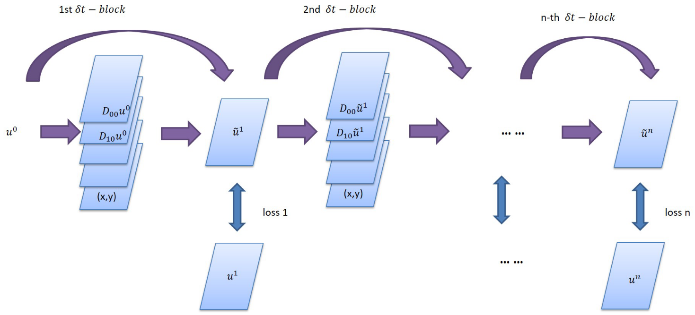
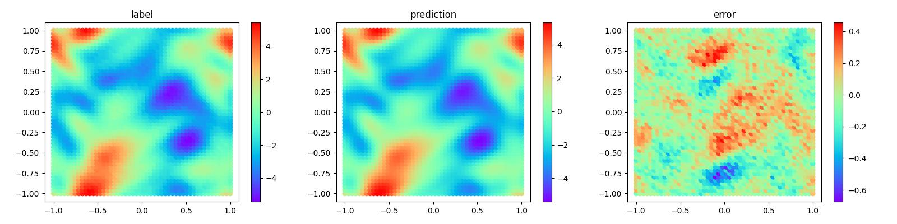
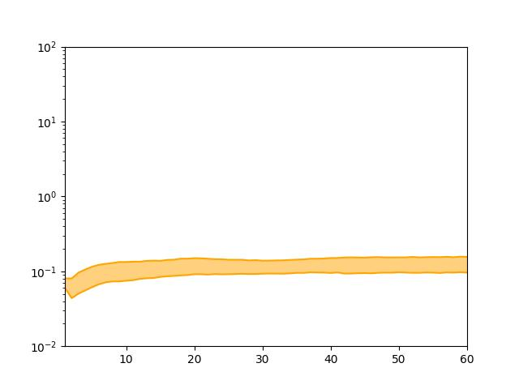

PDE-Net求解微分方程反问题并实现长期预测

概述
PDE-Net是Zichao Long等人提出的一种前馈深度网络用于从数据中学习偏微分方程，同时实现了准确预测复杂系统的动力学特性和揭示潜在的PDE模型。PDE-Net的基本思想是通过学习卷积核(滤波器)来逼近微分算子，并应用神经网络或其他机器学习方法来拟合未知的非线性响应。数值实验表明，即使在噪声环境中，该模型也可以识别被观测的动力学方程，并预测相对较长时间的动态行为。更多信息可参考原文。
问题描述
本案例求解可变参数的对流-扩散偏微分方程的反问题，并实现长期预测。
控制方程
在本研究中，对流扩散方程的形式为：
各项导数的系数分别为：
PDE-Net的模型结构
PDE-Net由多个\(\delta T\) Block串联构成，以实现长序列信息的预测，在每一个\(\delta T\) Block中，包含可训练参数的moment矩阵，该矩阵可根据映射关系转化为对应导数的卷积核，从而获取物理场的导数。将导数及其对应物理量经线性组合后，采用前向欧拉法，即可推导下一个时间步的信息。


脚本说明
在config.py里面可以设置训练的参数和采样参数。
train_config = ed({
"name": "pde_net", # 案例描述
"log_path": "./logs/result/", # log文件位置
"summary_dir": "./summary_dir/summary", # summary文件位置
"eval_interval": 10, # 验证周期
"lr_scheduler_gamma": 0.5, # 学习率调整系数
"lr": 0.001, # 初始学习率
"save_epoch_interval": 50, # ckpt保存周期
"mesh_size": 50, # 网格大小
"solver_mesh_scale": 5, # 求解器数据采样比
"enable_noise": True, # 在样本中是否增加噪声
"start_noise_level": 0.015, # 输入端噪声/信号比
"end_noise_level": 0.015, # 输出端噪声/信号比
"variant_coe_magnitude": 1.0, # 微分方程系数缩放比
"init_freq": 4, # 初始条件中的频率
"batch_size": 16, # 单次训练样本数目
"mindrecord": "src/data.mindrecord", # mindrecord保存位置
"epochs": 500, # 单个step训练周期数
"multi_step": 20, # step数目
"learning_rate_reduce_times": 4, # 学习率调整次数
"dt": 0.015, # 单个step预测的时间步长
"kernel_size": 5, # 卷积核大小
"max_order": 4, # 卷积核对应的最大微分阶数
"channels": 1, # 数据深度
"perodic_padding": True, # 是否采用周期性边界条件
"if_frozen": False, # 是否冻结moment中的参数
"enable_moment": True, # 是否采用moment控制卷积
})
求解流程
PDE-Net求解偏微分方程反问题分为以下5个步骤：
数据生成和加载。
模型构建。
模型训练。
模型测试和可视化。
长期预测。
数据集生成及加载
PDE-Net的初始物理场的分布是根据随机系数的傅里叶级数得到的，并根据谱方法求解对流-扩散方程，step表示\(\delta T\) Block的串联个数，在主程序中可以调用DataGenerator生成对应step的数据，并以mindrecord格式保存在data目录里。
from src.data_generator import DataGenerator
data = DataGenerator(step=i, config=config, mode="train", data_size=2*config["batch_size"], file_name="data/train_step" + str(i) + ".mindrecord")
data.process()
DataPrepare用于生成模型训练所需要的数据集，根据使用场景的不同，在训练中可调用train_data_prepare分别生成训练集和测试集，在长期预测和结果可视化中可以调用test_data_prepare生成测试数据集。
import mindspore.dataset as ds
class DataPrepare():
"""Obtain dataset for train or test from mindrecord."""
def __init__(self, config, data_file):
self.mesh_size = config["mesh_size"]
self.batch_size = config["batch_size"]
self.data_file = data_file
def test_data_prepare(self, step):
dataset = ds.MindDataset(dataset_files=self.data_file, shuffle=True, columns_list=["u0", "u_step{}".format(step)])
dataset = dataset.batch(batch_size=1)
return dataset
def train_data_prepare(self):
dataset = ds.MindDataset(dataset_files=self.data_file, shuffle=True, columns_list=["u0", "uT"])
dataset = dataset.batch(batch_size=self.batch_size, drop_remainder=True)
operations = [lambda x, y: (
x.reshape(-1, 1, self.mesh_size, self.mesh_size), y.reshape(-1, 1, self.mesh_size, self.mesh_size))]
dataset = dataset.map(operations, input_columns=["u0", "uT"])
dataset_train, dataset_eval = dataset.split([0.5, 0.5])
return dataset_train, dataset_eval
模型构建
MindFlow提供了PDENet接口可以直接建立PDENet模型，需指定网格的宽度、高度、数据深度、边界条件、拟合的最高阶数等信息。
from mindflow.cell.neural_operators import PDENet
def init_model(config, step):
return PDENet(height=config["mesh_size"],
width=config["mesh_size"],
channels=config["channels"],
kernel_size=config["kernel_size"],
max_order=config["max_order"],
step=step,
dx=2 * np.pi / config["mesh_size"],
dy=2 * np.pi / config["mesh_size"],
dt=config["dt"],
periodic=config["perodic_padding"],
enable_moment=config["enable_moment"],
if_fronzen=config["if_frozen"],
)
模型训练
由于每个\(\delta T\) Block的参数是共享的，因此模型根据\(\delta T\) Block的串联个数依次增加，逐一进行训练。其中，在step为1时，模型处于warm-up阶段，PDE-Net的moment为“frozen”状态，此时moment中的参数不参与训练。每新增一个\(\delta T\) Block，程序先进行数据生成和数据集的读取，初始化模型后，需载入前一个step训练的checkpoint，并定义优化器、模式、loss函数，并进行模型训练，在训练中模型会根据callback函数实时反映模型性能。
def train_single_step(step, logger, config, lr):
dataset = DataPrepare(config=config, data_file="data/train_step{}.mindrecord".format(step))
train_dataset, eval_dataset = dataset.train_data_prepare()
print("dataset size: {}".format(train_dataset.get_dataset_size()))
model = init_model(config, step)
epoch = config["epochs"]
warm_up_epoch_scale = 10
if step == 1:
model.if_fronzen = True
epoch = warm_up_epoch_scale * epoch
elif step == 2:
param_dict = load_checkpoint(
"./summary_dir/summary/ckpt/step_{}/pdenet-{}_1.ckpt".format(step - 1, epoch * 10))
load_param_into_net(model, param_dict)
print("Load pre-trained model successfully")
else:
param_dict = load_checkpoint(
"./summary_dir/summary/ckpt/step_{}/pdenet-{}_1.ckpt".format(step - 1, epoch))
load_param_into_net(model, param_dict)
print("Load pre-trained model successfully")
optimizer = nn.Adam(model.trainable_params(), learning_rate=Tensor(lr))
loss_func = LpLoss(size_average=False)
loss_scale = DynamicLossScaleManager()
solver = Model(model,
optimizer=optimizer,
loss_scale_manager=loss_scale,
loss_fn=loss_func
)
pred_cb, time_cb = _callback(model, eval_dataset, logger, step, config)
ckpt_cb = _checkpoint("./summary_dir/summary/ckpt/step_{}".format(step), config["save_epoch_interval"])
solver.train(epoch=epoch,
train_dataset=train_dataset,
callbacks=[LossMonitor(), pred_cb, time_cb, ckpt_cb],
dataset_sink_mode=True
)
def train(config, logger):
lr = config["lr"]
for i in range(1, config["multi_step"] + 1):
data = DataGenerator(step=i, config=config, mode="train", data_size=2 * config["batch_size"],
file_name="data/train_step{}.mindrecord".format(i))
data.process()
lr = _scheduler(int(config["multi_step"] / config["learning_rate_reduce_times"]), step=i, lr=lr)
train_single_step(step=i, config=config, logger=logger, lr=lr)
模型训练过程如下：
...
Train epoch time: 202.947 ms, per step time: 202.947 ms
epoch: 487 step: 1, loss is Tensor(shape=[], dtype=Float32, value= 0.663754)
Train epoch time: 159.724 ms, per step time: 159.724 ms
epoch: 488 step: 1, loss is Tensor(shape=[], dtype=Float32, value= 0.651065)
Train epoch time: 168.118 ms, per step time: 168.118 ms
epoch: 489 step: 1, loss is Tensor(shape=[], dtype=Float32, value= 0.648911)
Train epoch time: 151.441 ms, per step time: 151.441 ms
epoch: 490 step: 1, loss is Tensor(shape=[], dtype=Float32, value= 0.648038)
================================Start Evaluation================================
LpLoss_error: 0.04020831733942032
=================================End Evaluation=================================
predict total time: 0.4999086856842041 s
Train epoch time: 658.657 ms, per step time: 658.657 ms
epoch: 491 step: 1, loss is Tensor(shape=[], dtype=Float32, value= 0.640651)
Train epoch time: 113.954 ms, per step time: 113.954 ms
epoch: 492 step: 1, loss is Tensor(shape=[], dtype=Float32, value= 0.630344)
Train epoch time: 166.617 ms, per step time: 166.617 ms
epoch: 493 step: 1, loss is Tensor(shape=[], dtype=Float32, value= 0.606285)
Train epoch time: 182.399 ms, per step time: 182.399 ms
epoch: 494 step: 1, loss is Tensor(shape=[], dtype=Float32, value= 0.639116)
Train epoch time: 133.293 ms, per step time: 133.293 ms
epoch: 495 step: 1, loss is Tensor(shape=[], dtype=Float32, value= 0.631353)
Train epoch time: 136.290 ms, per step time: 136.290 ms
epoch: 496 step: 1, loss is Tensor(shape=[], dtype=Float32, value= 0.638366)
Train epoch time: 219.318 ms, per step time: 219.318 ms
epoch: 497 step: 1, loss is Tensor(shape=[], dtype=Float32, value= 0.639544)
Train epoch time: 202.168 ms, per step time: 202.168 ms
epoch: 498 step: 1, loss is Tensor(shape=[], dtype=Float32, value= 0.631913)
Train epoch time: 151.460 ms, per step time: 151.460 ms
epoch: 499 step: 1, loss is Tensor(shape=[], dtype=Float32, value= 0.640468)
Train epoch time: 138.932 ms, per step time: 138.932 ms
epoch: 500 step: 1, loss is Tensor(shape=[], dtype=Float32, value= 0.640138)
================================Start Evaluation================================
LpLoss_error: 0.03963303565979004
=================================End Evaluation=================================
predict total time: 0.5544295310974121 s
模型测试和可视化
模型训练结束后即可运行visualization.py文件对模型训练的结果进行测试和可视化，流场预测结果和label对比如下：

偏微分方程的系数回归结果如下：

偏微分方程系数的数据标签如下：

长时间预测
更进一步，可以将训练好的PDE-Net用于更长时间的预测， 进行多组测试，将误差的25%和75%绘制为带状曲线，如图所示：
